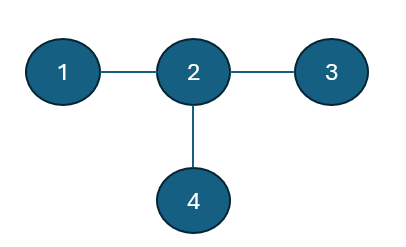
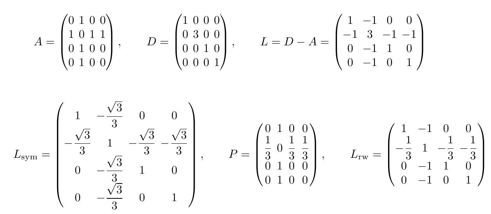

From Graph Structure to Graph Neural Networks#
Graph Neural Networks (GNNs) are deep learning models designed to operate on graph-structured data. They belong to the broader world of geometric deep learning, which studies learning architectures that generalize beyond Euclidean grids.
Many systems—such as social networks, molecules, knowledge graphs, and transportation networks—are naturally represented as graphs. This makes GNNs a powerful framework for representation learning.
Modern GNN variants differ in their:
• Spectral vs. Spatial formulations#
Two foundational viewpoints for defining convolution on graphs:
Spectral GNNs: based on graph Laplacian eigenvalues/eigenvectors and spectral filters.
Examples: GCN, ChebNet, CayleyNet, SGCSpatial GNNs: based on direct message passing or neighborhood aggregation.
Examples: GraphSAGE, GAT, GIN, MPNN
• Graph types:#
directed, undirected, weighted, heterogeneous, dynamic, and temporal.
Examples:
Directed: DGCN, DCRNN (traffic forecasting)
Weighted: GCN, ChebNet
Heterogeneous: HAN, R-GCN
Temporal/Dynamic: TGAT, DyRep, TGN
• Propagation rules:#
spectral convolution, message passing, attention, gating, skip connections.
Examples:
Spectral: GCN, ChebNet, SGC
Message passing: GIN, MPNN, GraphSAGE
Attention: GAT, HGT, GATv2
Gating: GGNN, GatedGCN
Skip/Residual: ResGCN, JK-Net
• Training settings:#
supervised, semi-supervised, self-supervised.
Examples:
Supervised: GIN, Graph Transformer
Semi-supervised: GCN, APPNP
Self-supervised: DGI, GraphCL, GRACE, MVGRL
• Scalability strategies:#
sampling, subgraph extraction, layer-wise aggregation, distributed training.
Examples:
Sampling: GraphSAGE, FastGCN, LADIES
Subgraphs: Cluster-GCN, GraphSAINT
Layer-wise: PinSAGE
Distributed: DistDGL, PaGraph
• Expressiveness:#
deeper architectures capable of capturing higher-order dependencies.
Examples:
Higher-order: MixHop, PPNP/APPNP, Geom-GCN
Deep GNNs: ResGCN, DeepGCN, GCNII
• Domain adaptations:#
molecular biology, recommender systems, knowledge graphs, spatiotemporal forecasting.
Examples:
Molecules: MPNN, SchNet, DimeNet, Graphormer
Recommender systems: NGCF, LightGCN, PinSAGE
Knowledge graphs: R-GCN, CompGCN, KGAT
Spatiotemporal: ST-GCN, DCRNN, Graph WaveNet
Despite architectural diversity, all GNNs rely on common mathematical foundations. Concepts such as adjacency matrices, degree matrices, Laplacians, diffusion processes, and eigenstructure form the basis for information propagation on graphs.
These foundations explain:
how smoothness and variation of graph signals are defined,
how convolution is generalized to graphs,
how spectral filters are constructed and approximated,
and how efficient models such as GCN arise from spectral filtering principles.
The next section introduces these ideas in detail, beginning with basic graph matrices and building toward spectral convolution, Chebyshev filters, and their connection to modern GNN layers.
Foundations of Graph Linear Algebra and Spectral Methods#
1. Linear Algebraic Representation of Graphs#
A graph \(G = (V, E)\) with \(|V| = n\) can be represented using several fundamental matrices.
1.1 Adjacency Matrix \(A\)#
The adjacency matrix \(A \in \mathbb{R}^{n \times n}\) encodes connections between nodes:
For weighted graphs:
1.2 Degree Matrix \(D\)#
The degree matrix is diagonal:
It measures how strongly node \(i\) is connected to its neighbors.
2. Graph Laplacian#
The unnormalized Laplacian is:
Properties:
\(L\) is symmetric and positive semi-definite.
The smallest eigenvalue is \(0\).
The number of zero eigenvalues equals the number of connected components.
2.1 Normalized Laplacians#
Symmetric normalized Laplacian#
Random-walk Laplacian#
Normalized Laplacians reduce degree influence and stabilize learning. Why?
The unnormalized Laplacian, directly depends on node degrees. High-degree nodes produce large diagonal values in \(L\), causing their influence to dominate smoothing, diffusion, and gradient flow. This often leads to unstable learning, exploding variations, and biased representations.
Normalized Laplacians address this by scaling node contributions. Both operators \(L_{\text{sym}}\) and \(L_{\text{rw}}\) ensure that messages between nodes are weighted by their degrees, reducing the effect of hubs and making propagation more balanced.
Example#
Consider the graph:

Node 2 has degree 3; the others have degree 1.
Using the unnormalized Laplacian on a signal such as
produces large outputs dominated by node 2.
In contrast, the symmetric normalized Laplacian scales each interaction by \(1/\sqrt{d_i d_j}\), resulting in significantly smaller and more balanced outputs. No node disproportionately drives the result.
In our example:

Why This Stabilizes Learning#
Degree-normalized operators prevent hubs from dominating gradients.
Convolution behaves consistently across nodes with different degrees.
Eigenvalues of \(L_{\text{sym}}\) lie in \([0,2]\), improving numerical stability.
The GCN update rule is derived directly from normalized Laplacians.
Overall, normalized Laplacians make graph convolution, message passing, and optimization more stable by controlling degree-induced variance.
3. Diffusion on Graphs#
Heat Diffusion on Graphs#
Heat diffusion on graphs is a mathematical tool used to understand how a signal
(or information) spreads through the nodes of a graph.
Although the idea comes from physics, its graph version is simple, intuitive,
and very useful in spectral graph learning.
What Is a Graph Signal?#
A graph signal is simply a vector:
where \(x_i\) is the value at node \(i\).
It may represent temperature, feature magnitude, label probability, or any
quantity assigned to nodes.
The Role of the Graph Laplacian#
As it has been said, the graph Laplacian is defined as:
where \(A\) is the adjacency matrix and \(D\) is the degree matrix.
The Laplacian measures how different a node is from its neighbors,
so it is the natural operator for modeling diffusion.
Heat Equation on a Graph#
The graph heat equation is:
\(x(t)\): the signal at time \(t\).
\(L\): pushes each node toward the average of its neighbors.
The equation expresses that heat flows from high to low values.
Heat Equation in Physics#
To better understand the graph heat equation, it helps to look at the original
heat equation from physics.
In a continuous space, heat spreads according to:
where:
\(u(x,t)\) is the temperature at position \(x\) and time \(t\),
\(\alpha\) is the heat diffusion constant,
the second derivative \(\frac{\partial^2 u}{\partial x^2}\) is the continuous Laplacian.
In higher dimensions, the equation becomes:
where \(\Delta\) is the Laplacian operator.
This equation says that heat flows from hotter regions to colder ones, and the Laplacian measures how different a point is from its surroundings.
Intuition: the rate of change of temperature at a point is proportional to the difference between that point and its surroundings.
The first derivative \(\partial u / \partial x\) measures the slope (how temperature changes along space).
The second derivative \(\partial^2 u / \partial x^2\) measures the curvature of the temperature profile, i.e., whether the point is hotter or colder than its neighbors.
In other words:
If the point is hotter than neighbors → second derivative > 0 → temperature decreases.
If the point is colder than neighbors → second derivative < 0 → temperature increases.
This is exactly the principle behind the graph Laplacian: each node moves toward the average of its neighbors, simulating heat diffusion on a discrete graph.
Therefore, when we move from continuous space to a graph, the continuous Laplacian
\(\Delta\) is replaced by the graph Laplacian \(L = D - A\).
This gives the graph version of the heat equation:
which describes how a signal diffuses across the nodes of a graph.
Solution of the Heat Equation#
This is a linear differential equation with constant coefficients, so its solution can be written using the matrix exponential:
Verification: $\( \frac{d}{dt} (e^{-t L} x(0)) = -L \, e^{-t L} x(0) = -L x(t) \)$
\(e^{-t L}\) is called the heat kernel, representing how the signal diffuses over the graph.
Here:
\(x(0)\) is the initial signal,
\(e^{-tL}\) is the heat kernel,
parameter \(t > 0\) controls the amount of smoothing:
small \(t\) = little diffusion,
large \(t\) = strong smoothing.
The matrix exponential plays a key role in spectral graph filtering.
How to Compute the Heat Kernel#
The heat kernel is defined as:
There are three common ways to compute or approximate it:
a) Using Eigen-Decomposition (Exact but Expensive)#
For a symmetric Laplacian matrix \(L\), we can write:
where:
\(U\) is an orthogonal matrix of eigenvectors \((U^\top U = I)\),
\(\Lambda = \mathrm{diag}(\lambda_1,\ldots,\lambda_n)\) is the diagonal matrix of eigenvalues.
Why?
The matrix exponential is defined by the power series:
Substitute \(L = U\Lambda U^\top\):
Because \(U^\top U = I\), the product collapses:
Thus each term in the series becomes:
Factor out the constant \(U\) and \(U^\top\):
Summary#
Eigenvectors define the “directions” of diffusion.
Eigenvalues determine how fast each component decays.
The heat kernel is:
This method is exact but requires full eigen-decomposition:
cost \(O(n^3)\). Feasible only for small graphs.
b) Using Polynomial Approximations (Fast and Scalable)#
To avoid eigen-decomposition, we approximate the heat kernel operator
$\(
e^{-tL}
\)$
using low-degree polynomials. Two widely used approaches:
b-1) Truncated Taylor (Power-Series) Approximation#
We truncate the Taylor expansion of the exponential and keep only the first \(K+1\) terms:
This is the standard Maclaurin power-series truncation, meaning that we use only terms \(k = 0, 1, \dots, K\).
Efficient application to a vector \(x\):
Let \(v_0 = x\)
Recursively compute \(v_{k} = L v_{k-1}\)
Accumulate \(\frac{(-t)^k}{k!} v_k\)
Cost: \(O(K |E|)\) for sparse graphs.
b-2). Chebyshev Polynomial Approximation#
In Chebyshev Polynomial Approximation, normalized Laplacian has been used and we rescale it so its eigenvalues lie inside \([-1,1]\):
Then approximate:
where:
\(T_k\) are Chebyshev polynomials,
\(\theta_k\) approximate the scalar function \(e^{-t\lambda}\).
Chebyshev recurrence:
\(T_0 x = x\)
\(T_1 x = \tilde L x\)
\(T_{k} x = 2 \tilde L T_{k-1} x - T_{k-2} x\)
Advantages:
near-minimax approximation error
numerically stable
used in ChebNet
Cost: \(O(K |E|)\).
c) Using Iterative Diffusion (Power-Series Form)#
We can rewrite the heat solution as repeated small diffusion steps using Euler forward with small iterative steps instead of Chebyshev polynomials:
\(I\) keeps each node’s current value.
\(-\Delta t\, L x(t)\) moves each node toward the average of its neighbors.
Smaller \(\Delta t\) → more stable but requires more steps.
After repeating the process many times, the result approximates \(e^{-tL} x(0)\).
Repeat this for \(T = t / \Delta t\) steps.
This is intuitive and easy to implement,
similar to repeatedly applying a smoothing operator.
This recursive update is essentially repeated Laplacian smoothing.
To ensure the iterative diffusion update remains stable and does not diverge,
the step size \(\Delta t\) must satisfy:
where \(\lambda_{\max}\) is the largest eigenvalue of the Laplacian \(L\).
In practice, for most graphs, using a conservative value such as:
keeps the diffusion process stable.
Why This Method Is Useful:
No eigen-decomposition needed.
No Chebyshev basis required.
Each iteration costs only \(O(|E|)\) for sparse graphs.
Works even on large graphs.
Interpretation#
Information flows from each node to its neighbors.
Large eigenvalues correspond to fast-varying components, suppressed by \(e^{-t\lambda}\).
Small eigenvalues correspond to smooth components, preserved even for large \(t\).
Why This Matters in GNNs#
Even though GNNs do not explicitly solve the heat equation, many fundamental
behaviors come from the same diffusion idea:
GCN performs a discrete Laplacian smoothing step.
Chebyshev spectral filters approximate the heat kernel.
Oversmoothing in deep GNNs is analogous to using very large \(t\).
Diffusion-based GNNs (PPR-GNN, GDC, APPNP) explicitly compute diffusion kernels
similar to \(e^{-tL}\).
Thus, heat diffusion gives a clear conceptual lens for understanding
information propagation in graph neural networks.
4. Graph Spectrum and Fourier Transform#
Since \(L\) is symmetric:
\(U\): orthonormal eigenvectors → graph Fourier basis
\(\Lambda = \text{diag}(\lambda_1, \dots, \lambda_n)\) → graph frequencies
Graph Fourier transform:
Small eigenvalues (low graph frequencies) correspond to smooth signals, where neighboring nodes have similar values.
Large eigenvalues (high graph frequencies) correspond to oscillatory signals, where neighboring nodes vary strongly.
Filtering in spectral domain:
\(g_\theta(\Lambda)\) applies a filter on graph frequencies
Generalizes classical convolution to irregular graphs
Interpretation: smooth propagation corresponds to low-pass filtering; high-frequency components capture sharp changes or noise.